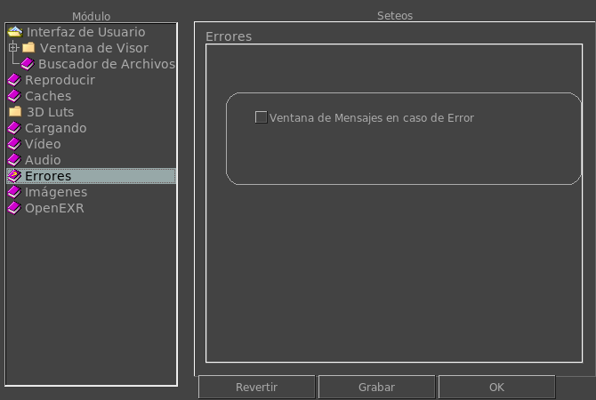

Preferencias de Errores
La Preferencia de Errores te permite configurar cómo se reportan los errores.

Ventana de Mensajes en caso de Error
Activando esta opción mostrará la ventana de mensajes cuando el primer error es detectado y reportado o bien cuando se encuentra cualquier error.